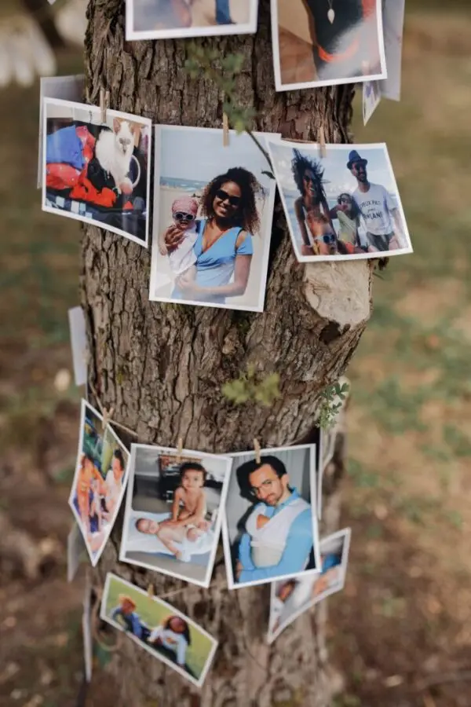

Original entertainment
What can you put in place to preserve the memories of your wedding in the Bordeaux region?



The traditional guest book is another way of collecting the highlights. It can take many forms so it blends perfectly with your theme. For an even more intense memory of your love that day, why not include a ritual in your symbolic ceremony? This powerful moment may be the most moving of all, as it fully represents your union and makes a beautiful symbol.
As a wedding planner and wedding designer, I can give you every tip for organising your wedding and keeping your best moments alive. And if you'd like to hire a photo booth, I have just what you need, so don't hesitate to get in touch!
A wedding is such a unique day that everyone wants it to be perfect. It's our union with the love of our life, so no detail should be forgotten.
By making the day perfect, the memories will be stronger. Preserving the good times is something wonderful when you know you'll be able to bring them out years later and relive them.
So here are several ways to preserve every moment of your wedding. Of course, the first step is to find a good photographer who will capture every burst of laughter, every emotion and every moment of your wedding. You can also find a videographer to film your whole day and turn it into a short film about your love, ideal for film lovers.
Setting up a photo booth or a guest photo corner can also invite your guests to contribute to your collection of memories. These are moments with friends not to be forgotten.

Lovely Day Event offers several services
Wedding planning
I step in at every stage of your preparations and guide you through your choices, bringing ideas and suggestions so that your wedding looks like no one but you.
Wedding design
Creative and passionate, I am a certified Wedding Designer and I create a scenographic atmosphere that matches the theme of your wedding.
On-the-day coordination
I will be the conductor of your day, managing the suppliers, the set-up of your decor and the smooth running of this beautiful day.